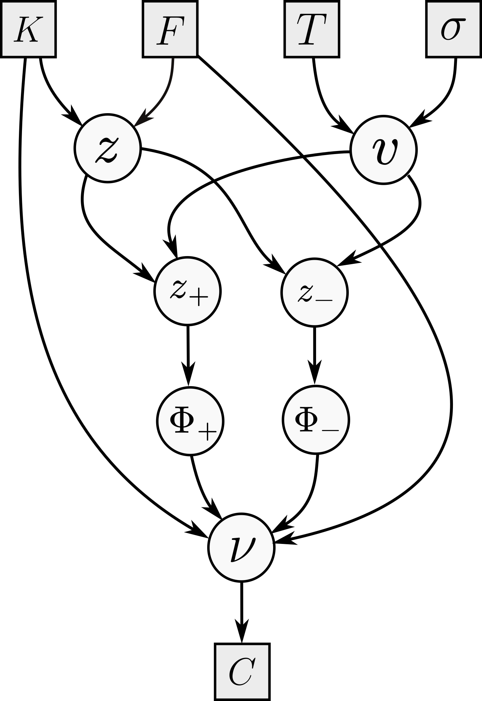
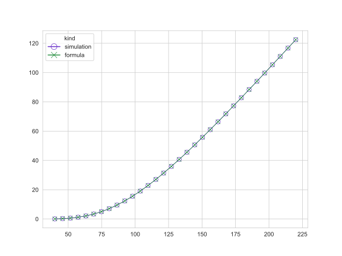
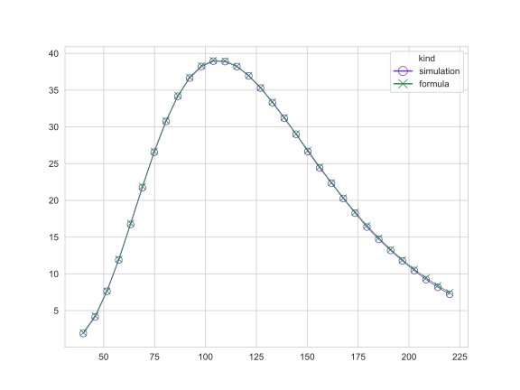
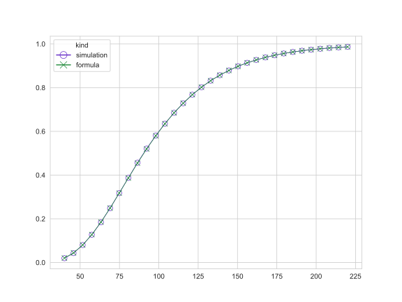

In this post I want to discuss a computational technique that is crucial to speed up the computation of gradients in the context of Monte Carlo simulations: adjoint algorithmic differentiation. The immediate selling point is easy to state: although conventional bump-and-recompute methods translate to a computational cost that scales linearly with the number $n$ of simulation (or model) parameters, AAD delivers a near-constant cost to compute both the output scalar of the simulation and all $n$ derivatives with respect to the simulation parameters. In other words, if the runtime of the simulation routine is roughly $T$, then AAD will compute the output and derivatives in around $cT$, where $c$ is a constant; we will clarify what the magnitude of $c$ is later on.
The set-up of AAD is relatively simple. Assume that we have a sample-generating model that depends on some vector parameter $\theta \in\mathbb R^n$; let us denote it and its distribution by $X(\theta)$. I will assume that we are sampling a time-homogeneous distribution, and that we want to compute $$\varphi(\theta) = \mathbb E(f(X(\theta))) \in \mathbb R$$ for some scalar function $f$. In full generality, one may be interested in some stochastic process and $\varphi(\theta)$ could depend on samples of this process at different times but, for the sake of simplicity, I will ignore this situation; this mostly saves us notational burden, but otherwise does not create any issues, in the sense that all that comes below applies, mutatis mutandis, to the case in which $\varphi(\theta)$ is instead the result of, say, applying a Euler discretisation to some process defined by a stochastic differential equation.
The question is then: how can we compute $\nabla \varphi(\theta)$? A very robust and foolproof approach is bumping: we numerically approximate the gradient components by replacing $\theta_i$ by $\theta_i + \delta$ one at a time, and re-running the simulation. The cost of this is obviously unacceptable when the dimension $n$ of $\theta$ is large, as it may very well be the case when we are considering a model calibrated to an implied volatility surface over multiple expiry and strike points. In the context of machine learning, there is no simulation to re-run, but rather a forward pass to perform, and the output of interest is the loss function. A modern neural network may have millions of parameters, so computing the gradient of the loss by bumping each one individually would require millions of forward passes, which is clearly infeasible. The good news is that, by virtue of the chain rule, and the fact that the computation graph of a network consists mostly of linear and simple non-linear operations, one can recover the gradient with respect to all parameters simultaneously by retracing the computation backwards in a single pass. The computational cost of this backward pass is roughly only a constant multiple of the forward pass. The idea in the context of Monte Carlo simulations is completely analogous!
Let us assume that we want to compute the gradient of $z = f(x_1,\ldots,x_n)$ and that we write this function as $z = h(y_1,\ldots,y_m)$ where $y_i = t_i(x_1,\ldots, x_n)$. In other words, we have broken down the calculation of $z$ into $m$ previous nodes determined by $y$, which are computed in terms of the vector $x$. It is not a bad idea to make a small tree-like shaped drawing to understand the relation between $z$, $f$, $h$ and the $t_i$. The chain rule tells us that $$ \frac{\partial z}{\partial x_i} = \sum_{j=1}^m \frac{\partial z}{\partial y_j} \frac{\partial y_j}{\partial x_i}.$$ The takeaway: if we have precomputed the derivatives of $z = h(y_1,\ldots,y_m)$ with respect to $y$, and those of $y_j = t_j(x_1,\ldots, x_n)$ with respect to $x_i$, we are a single vector-to-scalar operation away from computing $\frac{\partial z}{\partial x_i}$. Although this is a local computation, it scales well: our simulation will consist of many successive operations like addition, multiplication, division and, perhaps, a few special functions with known derivatives, so that the recipe above is straightforward to follow. Thus, from now on, as in the context of machine learning, we will think of our simulation as a sequence of computations that iterate the procedure above: from our original parameters $\theta$ we will produce a directed acyclic graph of computations that will, sample by sample, produce the final estimate of $\varphi(\theta) = \mathbb E( f(X(\theta)))$.
In order to continue our analysis, let us fix our output of interest $z$ and, for any intermediate computation $y$, let us write $y^*$ for $\frac{\partial z}{\partial y}$, which we call the adjoint of the node $y$. Of course, we have that $z^* = 1$, and we are interested in computing $\theta_i^*$ for each $i = 1,\ldots, n$. The display above then says that, for any two intermediate set of variables $x$ and $y$ related by $y_i = t_i(x_1,\ldots, x_n)$, we have that \[ x_i^* = \sum_{j=1}^m y_j^* \frac{\partial y_j}{\partial x_i}. \] The analysis we carried out reveals that whenever $w$ is a node in our calculation graph, we can compute $w^*$ by accumulating the adjoints of the nodes that are children of $w$ in the calculation graph, in the sense that they use the output of $w$ in their own calculation. Thus, we can use the above local formula to obtain a globally correct formula: for any $w$, we have that $$ w^* = \sum_{w\rightarrow y} y^* \frac{\partial y}{\partial w}. \quad\quad\text{(1)} $$ This gives us the correct way to traverse and compute adjoints in our calculation graph. Once the calculation of $z$ is done:
What we have described is (manual) adjoint differentiation. Before going into the details of algorithmic adjoint differentiation, and how to use it during Monte Carlo simulations, let us consider a concrete example to understand how this works and how adjoints propagate along the calculation graph. The famous Black--Scholes formula says that the forward premium price of a $T$-maturity call struck at $K$, written on some underlying with forward $F$, is equal to \[ C = F \Phi(z_+) - K \Phi(z_-) \] where $z_\pm = \frac{z}{v} \pm \frac v2$ and $z = \log\frac FK$ and $v=\sqrt{T}\sigma$, where $\sigma$ is the constant lognormal volatility.

Following the previous discussion, let us consider the following order (and its reverse) for the nodes in the figure: left to right, and top to bottom, so the order goes $K$, $F$, $\ldots$, $z$, $v$, $\ldots$, $\nu$. Note that I am making the (perhaps pedantic) distinction between $\nu$ (the node calculating $C$) and the output $C$ itself. Let us now follow the recipe to compute $\sigma^*$, the option vega. We begin at $\nu^* = 1$, and then compute $\Phi_+^* = F$ and $\Phi_{-}^* = -K$; these are easy. Moving on to $z_\pm$, we have only one child, and we get $$z_+^* = F \varphi(z_+) \qquad z_{-}^* = -K \varphi(z_-).$$ Then, $v$ has two children, and we get $$ v^* = z_+^* \left(-\frac{z}{v^2} + \frac 12\right) + z_-^* \left(-\frac{z}{v^2} - \frac 12\right). $$ The final computation is $\sigma^* = \sqrt{T} v^*$. This is of course enough for a computer, but just to verify that our algebra checks out, we can compute that $ F \varphi(z_+) = K \varphi(z_-) $ so we get that $$ \sigma^* =\sqrt{T} F \varphi(z_+) \left\{ \left(-\frac{z}{v^2} + \frac 12\right) + \left(\frac{z}{v^2} + \frac 12\right) \right\} = \sqrt{T} F \varphi(z_+). $$ Note that we ignored the node $z$, because $\sigma$ is not a parent of it.
The approach that we follow is a simplified version of what is done in Savine's book. We will build a number class that maintains a reference to a node, and a tape that will record a new node for each new number we create during some operation. In the context of a Monte Carlo simulation, we will begin with a fresh path and our simulation parameters as leaves, and record our operations in the tape. Once we are done, we will back-propagate through the tape, record the adjoints and repeat this for all paths. Because this post is not really about optimizing this process, I will ignore the crucial memory management details necessary for a production-quality implementation, and only focus on the broad components that will allow us to demonstrate that the implementation works.
@dataclass class node: arity: int adjoint: float partials: list[float] parents: list[node] tape: tape def propagate(self): if self.arity == 0 or self.adjoint == 0.00: return for i in range(self.arity): self.parents[i].adjoint += self.partials[i] * self.adjoint
First, we define a node as in the code block above, which has five attributes: its arity, its own adjoint, its own partial derivatives with respect to its parent nodes, and references to its parent nodes and the tape it is recorded in. The only method it has implements equation (1): to propagate through a node, simply push its partials and adjoint to each of its parent nodes. In tandem, we will use a number class, which will overload the usual arithmetic operations, while recording the derivatives at each node in an eager way:
@dataclass class number: value: float node: node def backprop(self) -> None: self.node.propagate() def __add__(self, other: number | float | int) -> number: if type(other) == number: return self.add(other) elif type(other) in (int, float): return self.add_scalar(other) def __sub__(self, other: number | float | int) -> number: if type(other) == number: return self.sub(other) elif type(other) in (int, float): return self.add_scalar(-other) def __mul__(self, other: number | float | int) -> number: if type(other) == number: return self.mul(other) elif type(other) in (int, float): return self.mul_scalar(other) assert False def __truediv__(self, other: number | float | int) -> number: if type(other) == number: return self.div(other) elif type(other) in (int, float): return self.div_scalar(other) assert False def __rmul__(self, other: float | int) -> number: return self * other def __neg__(self) -> number: num = from_nodes(-(self.value), [self.node]) num.node.partials[0] = -1.00 return num def __inv__(self) -> number: num = from_nodes(1 / (self.value), [self.node]) num.node.partials[0] = -1 / self.value**2 return num
Tape class, which will simply hold the nodes, seed the calculation, and backpropagate for every single Monte Carlo path calculation, is straightforward to define. It also acts as a factory to create either new leaves, or new nodes out of existing ones. The new_leaf function is not just a convenience function; as it does not put the leaves on tape so as to accumulate their adjoints over all paths; in a real production code, the leaves would live in the tape, but the tape would be marked so as to backpropagate and clear the memory usage up to but excluding the leaf nodes. Note also that backprop does not zero the adjoints before traversing the tape. Correctness here relies on the fact that a fresh set of node objects, where adjoints are initialized to zero, is created each path. In a production implementation where node memory is reused across paths explicitly zeroing all adjoints before each backpropagation cycle is a crucial step.
@dataclass class tape: nodes: list[node] def seed(self) -> None: self.nodes[-1].adjoint = 1.00 def backprop(self) -> None: for n in reversed(self.nodes): n.propagate() def clear(self) -> None: self.nodes = [] def from_nodes(self, value: float, nodes: list[node]) -> number: n = node(len(nodes), 0.00, [], [], self) if len(nodes) > 0: n.parents = nodes n.partials = [0.00 for _ in range(len(nodes))] self.nodes.append(n) num = number(value, n) return num def new_leaf(self, value: float) -> number: np = node(0, 0.00, [], [], self) return number(value, np)
The operations are straightforward, if a bit time-consuming to type out:
@dataclass class number: # continued from above... def add(self, other: number) -> number: num = from_nodes(self.value + other.value, [self.node, other.node]) num.node.partials[0] = 1.00 num.node.partials[1] = 1.00 return num def sub(self, other: number) -> number: num = from_nodes(self.value - other.value, [self.node, other.node]) num.node.partials[0] = 1.00 num.node.partials[1] = -1.00 return num def div(self, other: number) -> number: num = from_nodes(self.value / other.value, [self.node, other.node]) num.node.partials[0] = 1.00 / other.value num.node.partials[1] = -self.value / (other.value**2) return num def mul(self, other: number) -> number: num = from_nodes(self.value * other.value, [self.node, other.node]) num.node.partials[0] = other.value num.node.partials[1] = self.value return num def exp(self) -> number: num = from_nodes(exp(self.value), [self.node]) num.node.partials[0] = exp(self.value) return num def log(self) -> number: num = from_nodes(log(self.value), [self.node]) num.node.partials[0] = 1.00 / self.value return num def sin(self) -> number: num = from_nodes(sin(self.value), [self.node]) num.node.partials[0] = cos(self.value) return num def cos(self) -> number: num = from_nodes(cos(self.value), [self.node]) num.node.partials[0] = -sin(self.value) return num def sqrt(self) -> number: num = from_nodes(sqrt(self.value), [self.node]) num.node.partials[0] = 0.50 / sqrt(self.value) return num def square(self) -> number: num = from_nodes(self.value**2, [self.node]) num.node.partials[0] = 2.00 * self.value return num def add_scalar(self, other: float | int) -> number: num = from_nodes(self.value + other, [self.node]) num.node.partials[0] = 1.00 return num def div_scalar(self, other: float | int) -> number: num = from_nodes(self.value / other, [self.node]) num.node.partials[0] = 1.00 / other return num def mul_scalar(self, other: float | int) -> number: num = from_nodes(self.value * other, [self.node]) num.node.partials[0] = other return num def norm_cdf(self) -> number: num = from_nodes(normal_cdf(self.value), [self.node]) num.node.partials[0] = normal_pdf(self.value) return num def norm_pdf(self) -> number: num = from_nodes(normal_pdf(self.value), [self.node]) num.node.partials[0] = -self.value * normal_pdf(self.value) return num def max(self, other: number | float | int) -> number: if type(other) == number: num = from_nodes(max(self.value, other.value), [self.node, other.node]) if self.value > other.value: num.node.partials[0] = 1.00 num.node.partials[1] = 0.00 else: num.node.partials[0] = 0.00 num.node.partials[1] = 1.00 return num elif type(other) in (int, float): num = from_nodes(max(self.value, other), [self.node]) num.node.partials[0] = 1.00 if self.value > other else 0.00 return num raise TypeError( f"cannot compute max(number, other) for type(other)={type(other)}" )
Finally, simple helpers for computations with normal distributions:
def normal_cdf(v: float) -> float: return (1 + erf(v / sqrt(2))) / 2.00 def normal_pdf(v: float) -> float: return 1 / sqrt(2 * pi) * exp(-(v**2) / 2)
We can now put it all together in this very simple (but AAD ready) Monte Carlo simulation:
def bs_montecarlo( S: float, K: float, bsvol: float, rate: float, num_paths: int, T: float, seed: int = 12, ): payoffs: list[float] = [] deltas: list[float] = [] vegas: list[float] = [] rng = np.random.default_rng(seed) tape = tape([]) for _ in range(num_paths): tape.clear() # clear the tape for each path spot = tape.new_leaf(S) vol = tape.new_leaf(bsvol) drift = tape.new_leaf(rate) - 0.50 * vol * vol logspot = spot.log() sqrtT = float(np.sqrt(T)) noise = rng.normal() logspot = logspot + T * drift + vol * sqrtT * noise endval = logspot.exp() # call payoff: max(S(T) - K, 0) payoff = (endval - K).max(0.00) payoffs.append(payoff.value) # seed the tape: set adjoint of output node to 1 tape.seed() # backprop along the tape tape.backprop() deltas.append(spot.node.adjoint) # dC/dS vegas.append(vol.node.adjoint) # dC/dVol pv = sum(payoffs) / num_paths delta = sum(deltas) / num_paths vega = sum(vegas) / num_paths return pv, delta, vega
The graphs below confirm the correctness of the implementation: the analytic and the simulated values and Greeks coincide (within a small Monte Carlo standard error):


